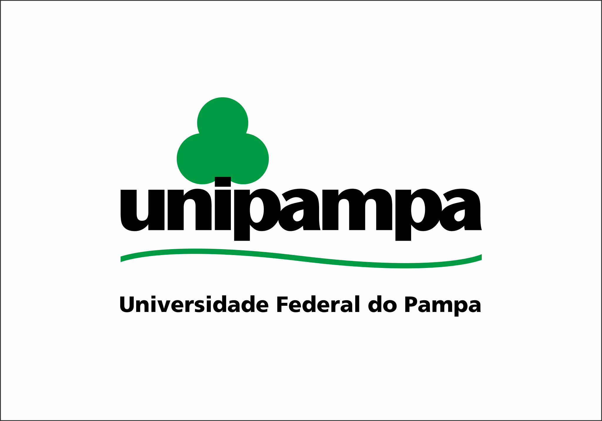
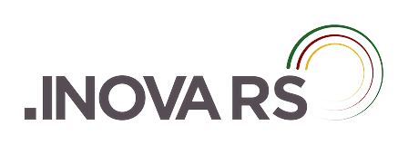
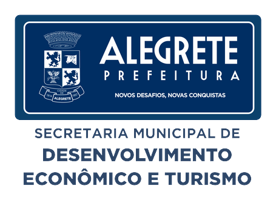
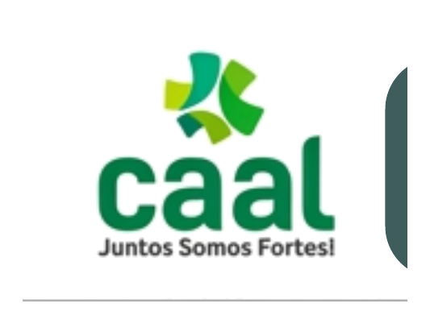
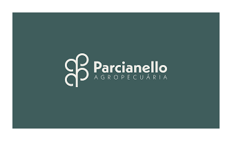
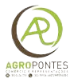
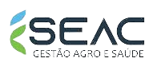
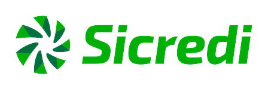
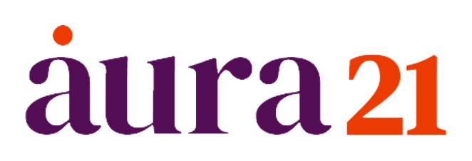

Resolver problemas reais
Criar respostas para as dores do produtor rural, do comércio e do cidadão.
Conectando pessoas, ideias e soluções para transformar o futuro da cidade.
Parque científico e tecnológico da Unipampa, o PampaTec é o ambiente que transforma conhecimento em negócios na Fronteira Oeste. É onde o ecossistema ganha estrutura: incubação de startups, empreendedorismo de base tecnológica e a primeira design house de semicondutores do Rio Grande do Sul.
Cada frente desta página — do agro à gestão pública — encontra no PampaTec o lugar onde ideias viram empresas, talentos encontram apoio e investimentos chegam ao território.
Inovação não é apenas tecnologia. É resolver problemas reais e gerar desenvolvimento para toda a comunidade.
Criar respostas para as dores do produtor rural, do comércio e do cidadão.
Reter talentos locais e atrair novos investimentos para a cidade.
Tornar a gestão pública e privada mais ágil e eficiente.
Conectar a matriz econômica tradicional ao futuro digital.
Uma base sólida que faz da cidade um terreno fértil para a inovação.
Base econômica sólida com potencial para liderar em Agrotech.
O maior município do RS em área — um laboratório a céu aberto.
Presença massiva de instituições de ensino superior e técnico.
Forte herança cultural abrindo portas para a economia criativa.
Uma comunidade de negócios em plena transformação digital.
A construção do ecossistema em três fases — com o PampaTec presente desde o início.
Chegada das universidades (Unipampa e IFFar), criação do PampaTec e aprovação da Lei Municipal de Inovação.
Assinatura do Pacto pela Inovação, estruturação da governança (Quádrupla Hélice) e grandes entregas de 2024, como o Alegrete Summit.
Maturidade estrutural, implementação de mesas temáticas setoriais (Agronegócio, TI, Articulação) e atração direta de investimentos.
Uma rede colaborativa que conecta a ideia à sua execução — a quádrupla hélice de Alegrete.
Geram conhecimento, pesquisa e formação que alimentam a inovação.
Cria políticas, marcos legais e ambientes que viabilizam o ecossistema.
Trazem desafios reais, demandas de mercado e oportunidades de negócio.
Convertem ideias em soluções e novos negócios de impacto.
Participa, valida e se beneficia das soluções desenvolvidas.
Apoiam com recursos, mentoria, crédito e acesso a editais.
Conectar pessoas para resolver desafios reais e gerar desenvolvimento do “Baita Chão”.
Apoiar a criação e o crescimento de novos negócios.
Desenvolver capacidades locais e manter as mentes brilhantes na cidade.
Criar novas matrizes econômicas além das tradicionais.
Ser referência regional em inovação na Fronteira Oeste e no RS.
Oito frentes que organizam a ação do ecossistema no dia a dia.
Do primeiro insight à expansão de mercado.
Despertar a cultura empreendedora.
Estimular a criatividade e as soluções.
Testar a viabilidade no mercado real.
Modelagem de negócios e prototipagem.
Lançamento, incubação e tração.
Expansão, aceleração e novos mercados.
O ecossistema é construído coletivamente. Conheça quem faz parte.
Universidades

Governo


Empresas & Entidades






Ambientes & Fomento
Apresentação completa do Ecossistema de Inovação de Alegrete.
Baixe a apresentaçãoHá muitas formas de fazer parte e fortalecer a inovação em Alegrete.
Viabilize eventos, programas de ideação e a governança institucional.
Compartilhe sua expertise técnica e de mercado com startups.
Traga os gargalos da sua empresa para serem resolvidos por inovação aberta.
Participe ativamente das decisões e das mesas setoriais.
Seja um embaixador da inovação, promovendo o ecossistema.
Facilite o acesso a novos mercados, editais e investidores.
Faça parte do Ecossistema de Inovação de Alegrete — começando pelo PampaTec, o motor que transforma ideias em negócios.